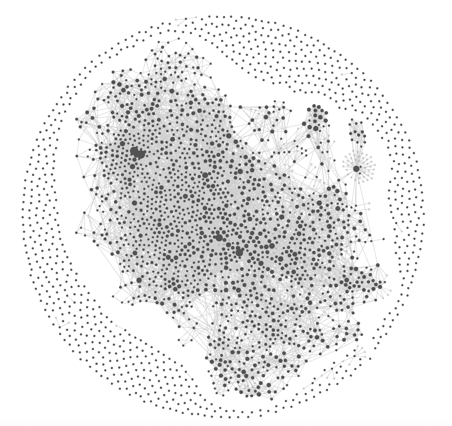

환자 위키
— Patient Knowledge Graph
EMR + Lifelog + AI Conversation 통합 진화형 개인 위키
환자
김○○ (62세 여)
주병
과민성 방광 · 빈뇨 · 야간뇨 3회
현 처방
오림산 (Tsumura #056)
가입일
2026-03-01
누적
D+90
데이터가 쌓일수록
환자 위키가 진화한다
동의 시점(D+0) → 디바이스 연동(D+30) → 시니어 라이프 락인(D+90) — 노드 5개 → 25개 → 80+개
주병 (Hub)
처방
라이프로그
AI 대화
EMR
시니어 라이프 서브위키
Tier 1 · EMR Seed
진료 데이터
D+0
NODES
9
EDGES
8
SOURCE
EMR only
📋 한의원 EMR 시드 — 환자 메타 + 진료 이력
과민성 방광
오림산
야간뇨
성별 (여)
연령 62세
치료력
첩약 이력
진료일
환자ID
Tier 2 · Lifelog Fusion
일상의 디지털 트윈
D+30
NODES
36
EDGES
52
SOURCE
+ 스마트폰 · 밴드
⌚ 스마트폰 + 스마트밴드 헬스케어 풀셋
라이프로그
수면 단계
HRV
심박
체온
SpO₂
호흡수
활동·걸음
야간 각성
배뇨 일지
카페인
AI 대화
환자 질문
증상 변동
Tier 3 · Senior Life Lock-in
시니어 라이프 서브위키
D+90
NODES
110+
EDGES
220+
SOURCE
+ Diet · Supp · Goods
🏠 시니어 라이프 4대 서브위키
식단
카페인↓
수분조절
건기식
크랜베리
D-만노스
생필품
요실금 패드
운동
케겔
📊 데이터 규모 — 전통 SQL vs Prub Vector DB
Legacy
전통 RDBMS
10
+
테이블
~50
만
행 (Row)
스키마
환자 · 진료 · 처방 · 약품 · EMR
정규화된 관계형 테이블 구조
검색 방식
WHERE LIKE '%빈뇨%'
✗
"頻尿" miss (다국어)
✗
"OAB" miss (약어)
✗
"방광 과민" miss (동의어)
⚠️ 의미·다국어 검색 불가
Prub
Vector + Graph DB
11,268
노드
730
+
임베딩 × 3,072차원
데이터 밀도
730 × 3,072 =
약 224만 float / 8.8MB
벡터 임베딩 시맨틱 공간
검색 방식
cosine sim ≥ 0.85
✓
"빈뇨" hit (한국어)
✓
"頻尿" hit (일본어)
✓
"OAB" · "방광 과민" hit
🚀 다국어 · 동의어 · 관계 추론
Prub Vector DB의
3가지 기술 어필 포인트
— SQL로는 구현 불가한 한방 시맨틱 레이어
01
정보 밀도
SQL
50만 행
PRUB
22.4억 float
≈ 3× 정보 밀도
730 × 3,072
차원 임베딩 / 8.8MB
SQL 환산:
50만 행 × 200 컬럼
02
다국어 시맨틱 검색
빈뇨
KR
頻尿
JP
OAB
EN
cosine sim ≥ 0.85
동시 hit
한·일·영 의학용어 통합 검색
03
그래프 관계 추론
환자
증상
처방
로그
multi-hop
4-hop traversal
자동 추론
SQL JOIN 4단 = 수십 초 →
ms
≡
Prub Vector DB
=
정보밀도
+
다국어
+
관계추론
→
SQL로 구현 불가
한 한방 시맨틱 레이어
📚 사내 지식 인프라 — 운영 중 (MAGI-wiki)

당사가 운영 중인
MAGI-wiki
가 환자 위키의 기술 기반.
동일 구조를 환자 1인당 자동 복제한다.
750+
문서
730+
임베딩
11K+
엣지